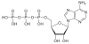

adenosine-triphosphate

Has synonym(s): atp
Definition: Adenosine triphosphate (ATP) is an organic compound that provides energy to drive and support many processes in living cells, such as muscle contraction, nerve impulse propagation, condensate dissolution, and chemical synthesis. Found in all known forms of life, ATP is often referred to as the "molecular unit of currency" of intracellular energy transfer. When consumed in metabolic processes, it converts either to adenosine diphosphate (ADP) or to adenosine monophosphate (AMP). Other processes regenerate ATP. The human body recycles its own body weight equivalent in ATP each day. It is also a precursor to DNA and RNA, and is used as a coenzyme.
Source: Wikipedia
Wikipedia Page (Something wrong with this association? Let us know.)
Wikidata Page (Something wrong with this association? Let us know.)